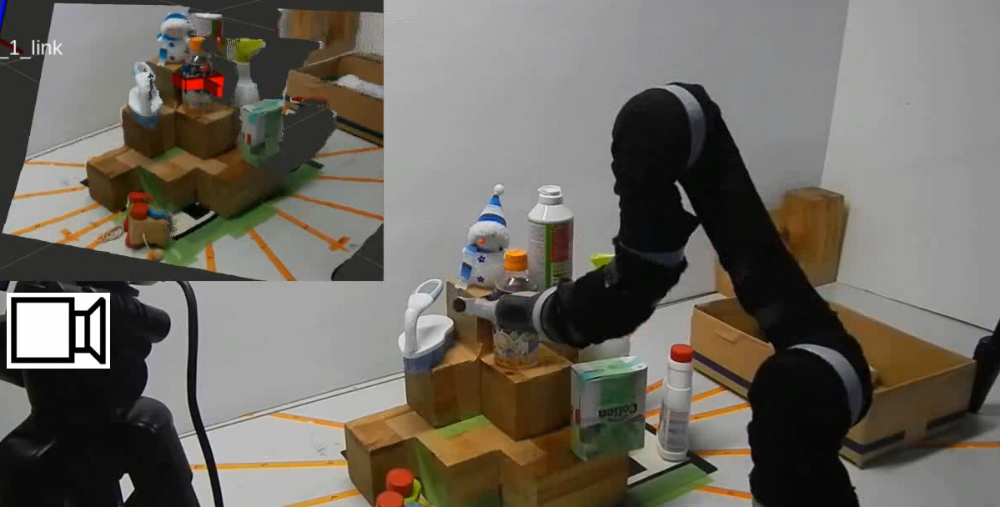
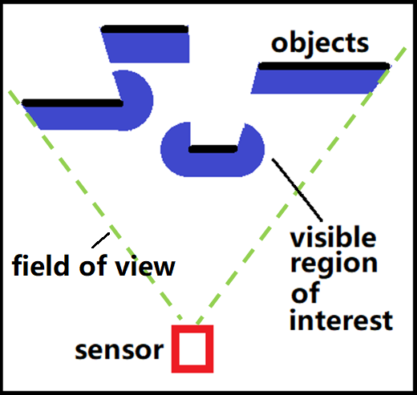
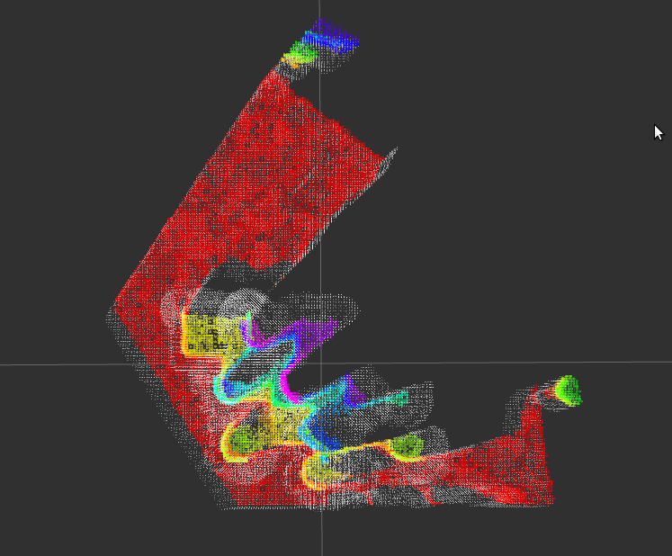
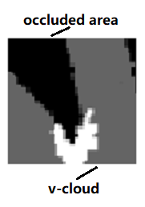

Remove dangerous grasp: VCloud(visible point cloud) filter implemented with “Grasp Pose Detection in Point Clouds”
Since the occlusion of the sensor is considered, we want to remove the partly invisible grasp from the sensor. We provide a filter/method that includes incomplete point cloud information. The method can be used for many different scenes such as complex backgrounds.

To solve this problem, we introduce a novel technique named visible point-cloud(V-cloud) – generated using the point cloud and pose (position and orientation) information of the sensor(s) – that helps to eliminate unsafe grasp candidates quickly and efficiently.

we also define a value named visibility to determine the danger of grasp

Of course, the same effect can be achieved by using other filters. However, the method is more general and more efficient.
The method is implemented with “Grasp Pose Detection in Point Cloud”
The following instructions have been tested on Ubuntu 16.04, Ubuntu 18.04, and Ubuntu 20.04.
[PCL 1.9 or newer] [Eigen 3.0 or newer] [OpenCV 3.3 or newer]
Since we use the old version of “Grasp Pose Detection in Point Clouds”. please use the gpd uploaded in this resp.
sudo apt-get install libprotobuf-dev libleveldb-dev libsnappy-dev libopencv-dev libhdf5-serial-dev protobuf-compiler
sudo apt-get install --no-install-recommends libboost-all-dev
sudo apt-get install libgflags-dev libgoogle-glog-dev liblmdb-dev
sudo apt-get install libopenblas-dev liblapack-dev libatlas-base-dev
mkdir -p ~/software/caffe
cd ~/software/caffe
git clone https://github.com/BVLC/caffe.git
copy the example CMake config
cd caffe
cp Makefile.config.example Makefile.config
change CMake config
gedit Makefile.config
from
CPU_ONLY := 1
OPENCV_VERSION := 3
INCLUDE_DIRS := $(PYTHON_INCLUDE) /usr/local/include
LIBRARY_DIRS := $(PYTHON_LIB) /usr/local/lib /usr/lib
to
CPU_ONLY := 1
OPENCV_VERSION := 3
INCLUDE_DIRS := $(PYTHON_INCLUDE) /usr/local/include /usr/include/hdf5/serial
LIBRARY_DIRS := $(PYTHON_LIB) /usr/local/lib /usr/lib /usr/lib/x86_64-linux-gnu /usr/lib/x86_64-linux-gnu/hdf5/serial
beacuse the computing speed mkl > openlas >atlas, and caffe take atlas at default
install to the system
mkdir ./build
cd ./build
cmake ..
make all -j16
make install -j16
make runtest -j16
copy the gpd folder into ~/software
mkdir build && cd build
cmake ..
make
sudo make install
copy the gpd_vcloud int ~catkin_ws/src. and catkin_make/build
you need a realsense camera to obtain the point cloud
roslaunch gpd_vcloud step1_realsense_gets_pointcloud.launch
the gpd_cloud with active once as long as point cloud exists
roslaunch gpd_vcloud step2_gpd_vcloud.launch
If you like this package and use it in your own work, please cite our journal paper. I attach the paper file in the package
Xixun Wang, S. Nisar, F. Matsuno, Robust grasp detection with incomplete point cloud and complex background.